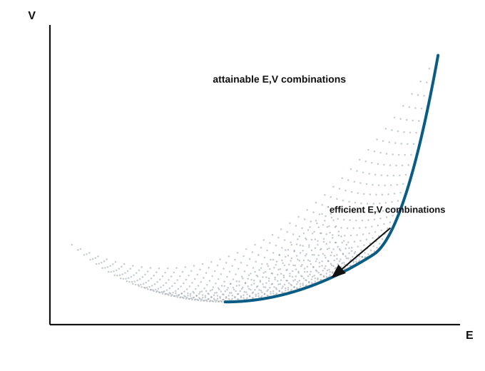
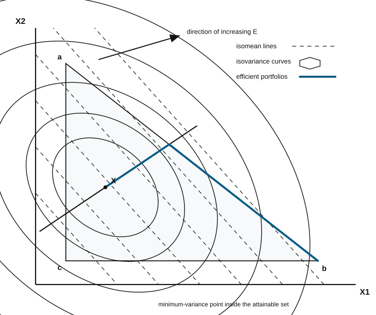
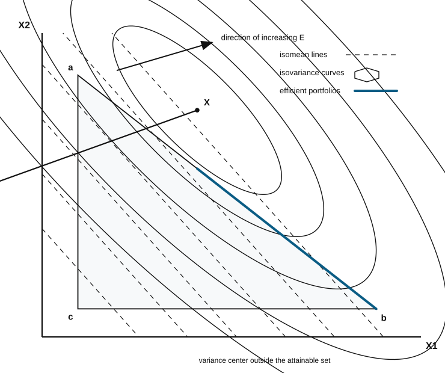
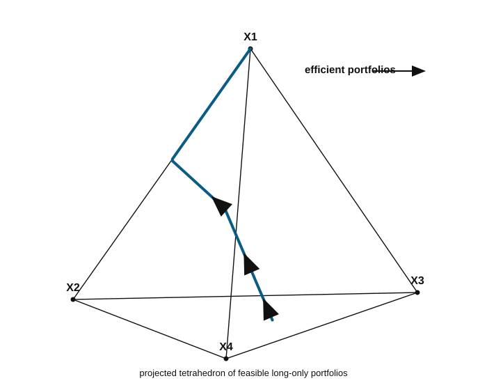
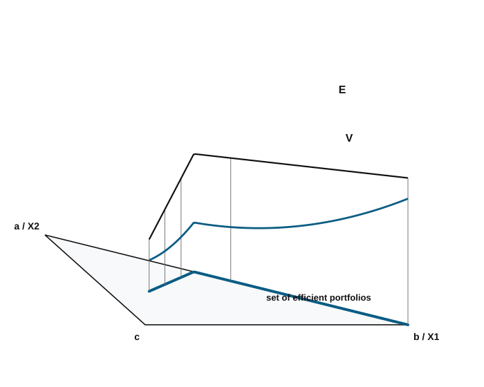
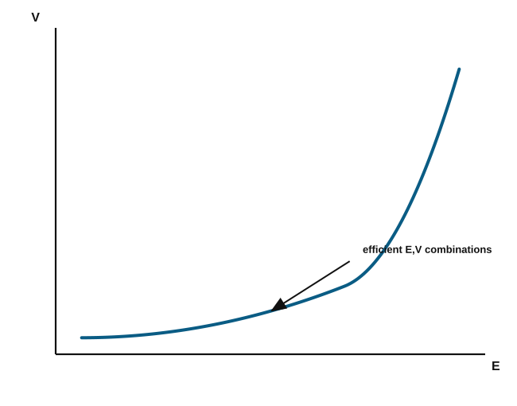
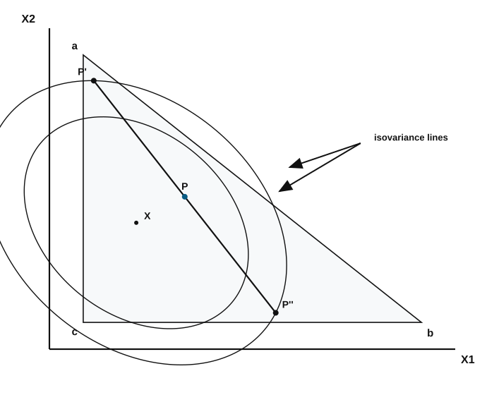

Recreating Markowitz Portfolio Selection Results
The 1952 paper contains schematic figures and formulas, not an empirical dataset. This recreation therefore uses explicit synthetic beliefs, then recomputes the expected-return and variance geometry that the paper describes.
Core Computation
V(w) = sum_i sum_j w_i * w_j * sigma_ij
sum_i w_i = 1, w_i >= 0
For each target expected return, the script enumerates active long-only asset sets and solves the quadratic KKT system for the minimum-variance portfolio. The efficient frontier begins at the feasible minimum-variance portfolio and ends at the maximum-return asset.
Three-Security Example A
This case recreates the paper's interior minimum-variance geometry used in the three-security diagrams.
Means: 0.15, 0.12, 0.05
| 1 | 2 | 3 | |
|---|---|---|---|
| 1 | 0.09 | 0.01 | 0.015 |
| 2 | 0.01 | 0.05 | 0.01 |
| 3 | 0.015 | 0.01 | 0.04 |
Three-Security Example B
This case recreates the alternative geometry where the unconstrained variance center lies outside the feasible triangle.
Means: 0.15, 0.12, 0.05
| 1 | 2 | 3 | |
|---|---|---|---|
| 1 | 0.05 | 0.02 | 0.04 |
| 2 | 0.02 | 0.04 | 0.06 |
| 3 | 0.04 | 0.06 | 0.16 |
Four-Security Example
Means: 0.16, 0.12, 0.08, 0.04
| 1 | 2 | 3 | 4 | |
|---|---|---|---|---|
| 1 | 0.1 | 0.03 | 0.02 | 0.01 |
| 2 | 0.03 | 0.06 | 0.015 | 0.01 |
| 3 | 0.02 | 0.015 | 0.04 | 0.005 |
| 4 | 0.01 | 0.01 | 0.005 | 0.03 |
Figure 1: attainable E,V combinations

Figure 2: three-security efficient portfolios, interior center

Figure 3: three-security efficient portfolios, outside center

Figure 4: four-security efficient path

Figure 5: E and V over the efficient set

Figure 6: efficient E,V frontier

Figure 7: diversification between equal-variance portfolios

Reproducibility
Run python3 recreate_markowitz_results.py from this folder to regenerate every SVG, this report, and efficient_frontier_case_a.csv.